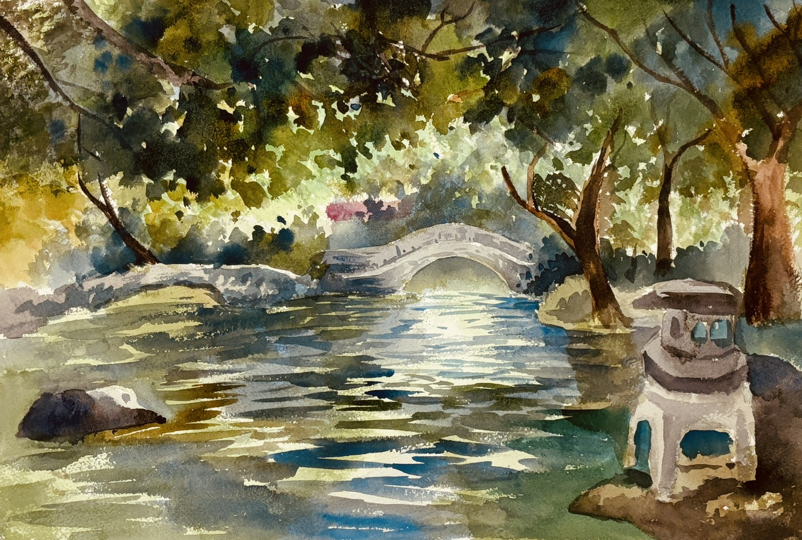
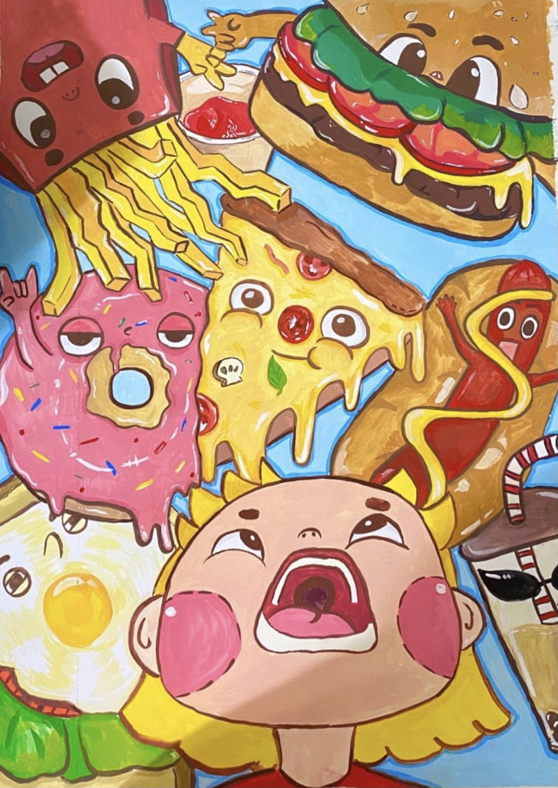
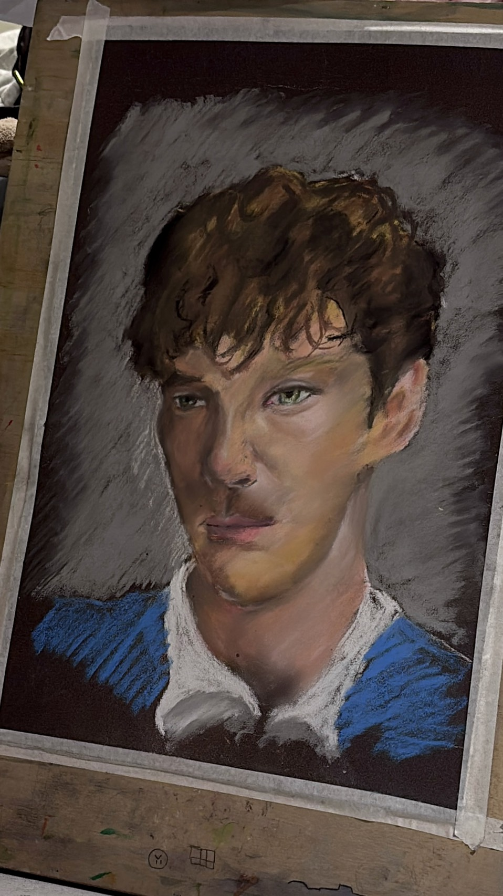
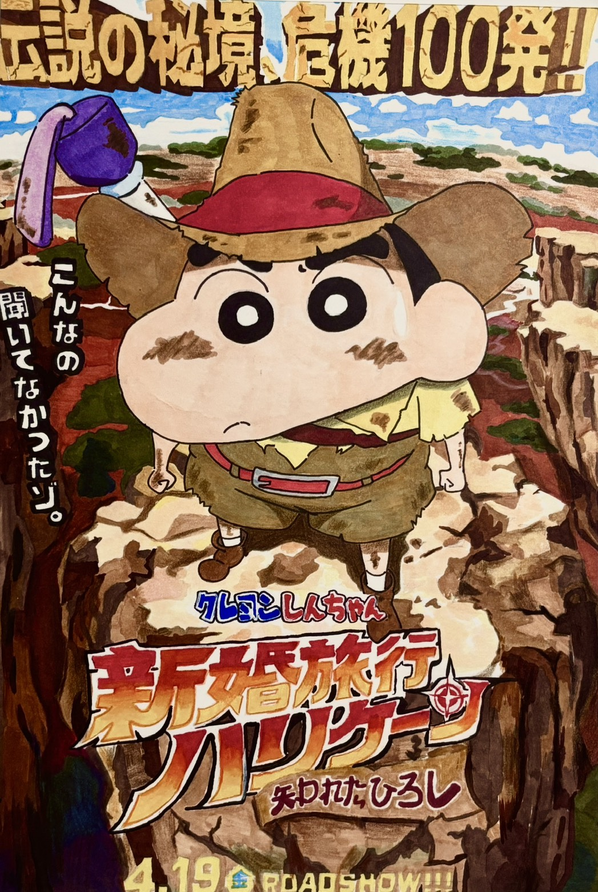
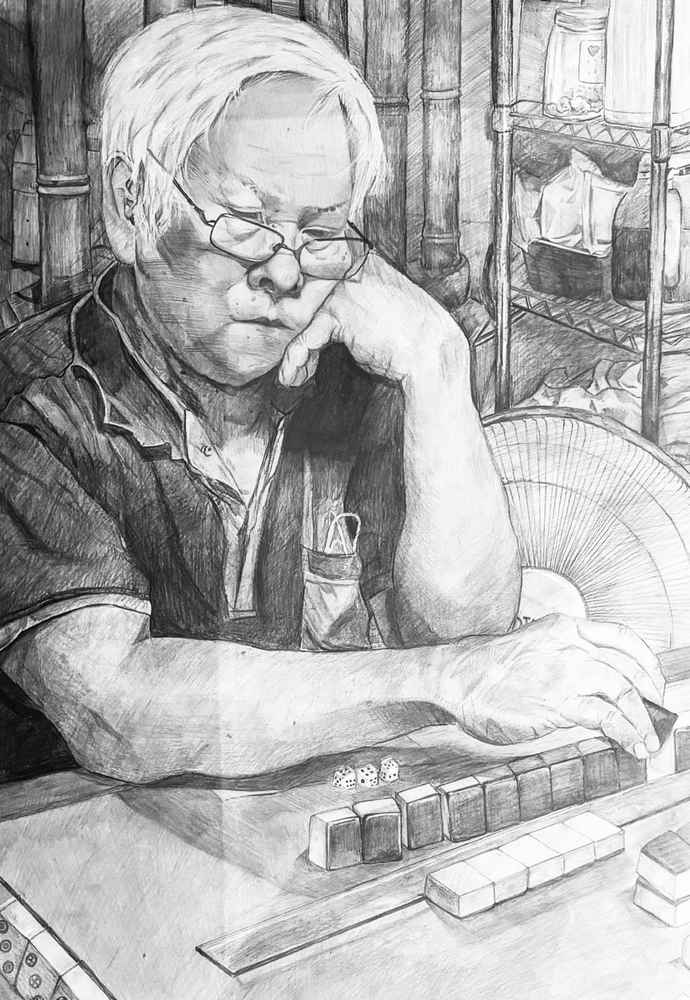

給作品一個呼吸的空間。
SELECTED WORKS
點擊圖片或向右滾動，安靜地閱讀每一個像素。

「深夜3點的草稿，雖然崩潰，但看到成品的那一刻很治癒。」

「治癒的畫作，試著在畫面上留下一抹甜膩感。」

「第一次使用粉彩，還有更多進步空間。」

「蠟筆小新電影海報仿畫，讓枯燥的作業多了一層趣味。」

「高中生涯中耗時最久的一件作業，它代表了我的執著。」
ABOUT ME 01 / 04
現代人習慣在網路上快速滑動，大量的資訊常讓作品被淹沒。
我想打造一個「慢速瀏覽」的空間，讓觀者在進入這個網頁時，能先放慢呼吸。
刪除不必要的裝飾線條與廣告感色彩，回歸最純粹的黑、白、灰。
ABOUT ME 02 / 04
剛才你所看到的五件作品，都是我高中生涯的一部分。
這裡的留白，不僅僅是視覺上的缺乏，
而是我對這三年創作過程的尊重，也代表著我未來還有無限的可能性。
ABOUT ME 03 / 04
本站的設計深受無印良品核心哲學「空 (Emptiness)」的啟發。
同時仿效原研哉先生對「白」的定義 ── 白不只是一種顏色，而是一種逃離混亂的感覺。
透過拉開文字與圖片的「物理距離」，產生一種高雅的儀式感。
ABOUT ME 04 / 04
我在尋找注重設計感、執著於細節的潛在合作對象，
或是單純想靜下心來欣賞創作的朋友。
如果你有任何想法，歡迎與我取得聯繫或留下訊息。